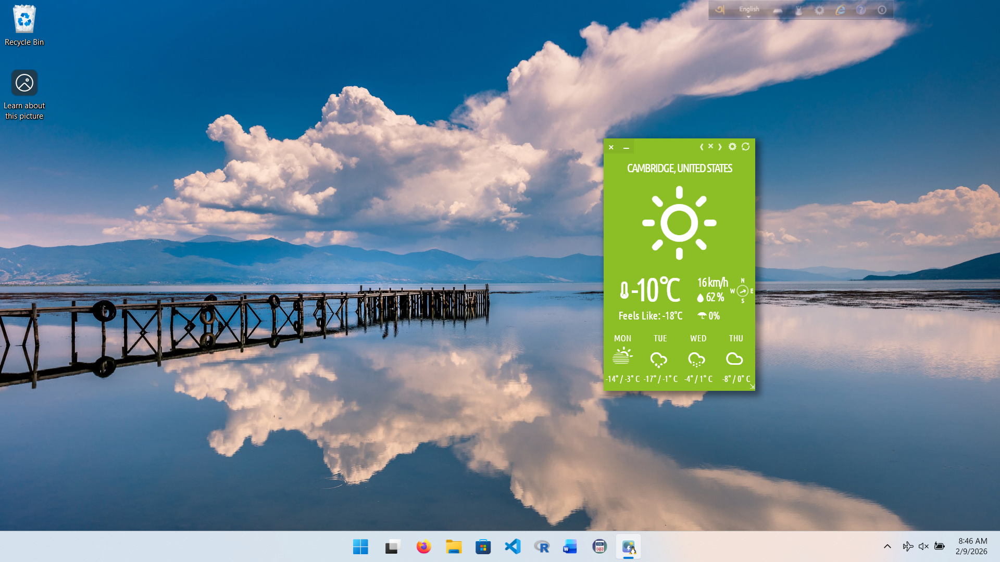

How to install Typhoon on Windows with WSL
Typhoon running on Windows

1) Install WSL and Ubuntu
Open PowerShell as Administrator and run:
wsl --install2) Install Ubuntu
Install Ubuntu from the Microsoft Store, then launch it once to finish setup.
3) Add the Typhoon Launchpad PPA
The official PPA is hosted on Launchpad
sudo add-apt-repository ppa:apandada1/typhoon4) Install Typhoon
sudo apt install typhoon5) Launch from the Windows Start menu
On Windows 11 with WSLg, Start menu entries are created automatically from Linux apps. Open the Start menu and search for "Typhoon" or look under the "Ubuntu" folder.